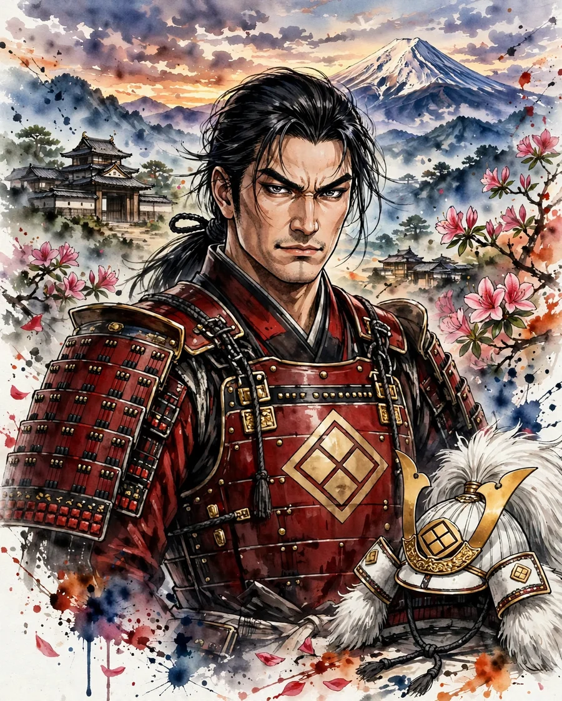

Takeda Shingen
武田信玄 (たけだ しんげん)

| Years | 1521–1573 |
|---|---|
| House | Takeda clan |
| Region | Chubu |
| Era | Sengoku period |
Overview
The heir of Takeda Nobutora of Kai, he exiled his father and succeeded to the headship of the house. Advancing into Shinano, he clashed repeatedly with Uesugi Kenshin at Kawanakajima, and extended his territory into Suruga and Totomi as well. In the course of his western campaign, after defeating Ieyasu at Mikatagahara, he is said to have died of illness.
Life
Born as the heir of Takeda Nobutora, the shugo of Kai, in 1541 he exiled his father to Suruga and succeeded to the headship. Advancing into Shinano, he fought Murakami Yoshikiyo and others, and at Kawanakajima he confronted Uesugi Kenshin five times (1553–1564). He formed a three-way alliance with the Imagawa and the Hojo, and later, as the Imagawa house weakened, invaded Suruga. In 1572 he began his western campaign, took Futamata Castle, and defeated Tokugawa Ieyasu at the Battle of Mikatagahara, but the following year, 1573, he is said to have died of illness in Shinano (the cause and place of his death are debated). He also devoted energy to the management of his domain, including flood control and the development of gold mines, and left a domain law code in the form of the Koshu Hatto no Shidai.
In battle
Shingen's generalship is said to have been characterized by an emphasis on intelligence gathering and advance stratagem, holding it the highest policy to break the enemy without fighting. At the Fourth Battle of Kawanakajima (1561), the contest of wits over the night attack on Mount Saijo (Tsumajo-san) and the deployment of the main force is famous; against the Uesugi army's 'Kurumagakari' (wheel) formation he suffered heavy losses but brought the battle to a draw. The 'Furinkazan' war banner is based on a passage from Sun Tzu's Art of War, but whether Shingen actually used it is a matter of debate in the sources.
Arms and equipment
Few records survive of Shingen's own martial skill, but the Takeda army of Kai was known for the strength of its cavalry, and the house is also known for its hereditary retainer band of senior retainers such as Itagaki Nobukata and Amari Torayasu, and for employing masterless samurai such as Yamamoto Kansuke. As for Kansuke's real image, he was long treated as a legendary strategist, but documents were discovered that confirmed his existence.
Character and records
Known by the nickname 'the Tiger of Kai,' his letters to the people of his domain also reveal his face as a ruler. The anecdote of single combat in which he crossed swords with Kenshin at Kawanakajima derives from war chronicles such as the Koyo Gunkan, and whether it is historical fact has not been confirmed. Many of the sayings regarded as his house precepts were also compiled in later times.
In literature
takedaFu, furinkazan, tokugawa
Takeda Shingen is an epic novel with Shingen as its protagonist. The protagonist of Furin Kazan is the strategist Yamamoto Kansuke, but Shingen also appears at the center of the story as his lord. In Tokugawa Ieyasu the protagonist is Ieyasu, but Shingen, who defeats Ieyasu at Mikatagahara, is portrayed on a grand scale as his greatest adversary.
Castles connected with Takeda Shingen
- No. 24 Takeda Clan Residence (Tsutsujigasaki Residence)
- No. 25 Kofu Castle
- No. 26 Matsushiro Castle
- No. 30 Takato Castle
Recommended books on the age of the warlords
Castle History
Japanese Castles 1540–1640
Author: Stephen Turnbull
The great castles of Japan's warring-states era: how the strongholds of the daimyo were built, defended and attacked, explained by the leading English-language historian of samurai warfare, with illustrations throughout.
View at Pickwick BookshopCheck the price at Pickwick Bookshop
Castle History
Japanese Castles AD 250–1540
Author: Stephen Turnbull
The earlier half of the story: from the first fortifications of ancient Japan through the rise of the first true castles, again by Stephen Turnbull. Read it before the 1540–1640 volume to cover the whole arc.
View at Barnes & NobleCheck the price at Barnes & Noble
Castle Guide
Samurai Castles: History / Architecture / Visitors' Guides
Hundreds of color photographs and close-up detail on Japan's most important surviving samurai castles — their history, design and military features, with guidance for visitors. The best single companion for castle sightseeing.
View at Barnes & NobleCheck the price at Barnes & Noble
Book links on this page go to the retailers' product pages. Prices and availability are shown on the retailer's page.